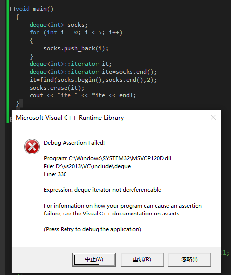
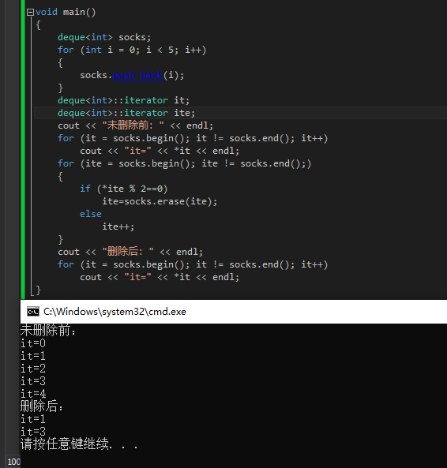
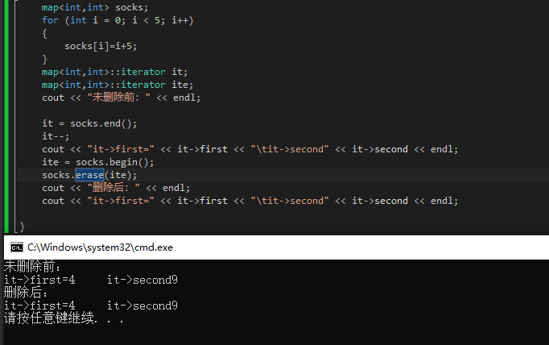
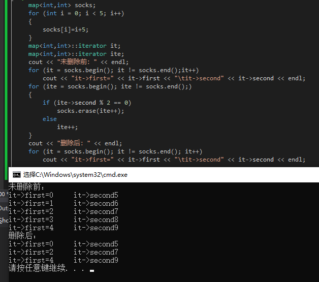

迭代器虽然拥有指针的功能，但不是指针！其最重要的便是内容提纲和成员访问。
迭代器是一种类似指针的对象，其重载了指针->，*，++ --等操作符，其实质是封装了原生指针，为了为容器提供统一的接口，
容器类型<typpe，.>::iterator 迭代器名称
例如：vector<int>::iterator iter;
向容器中添加或者删除数据都有可能导致迭代器失效
（1）顺序容器（vector，deque）
顺序容器即使用了连续分配的内存，在向容器中添加或者删除数据时，都将使当前插入或者删除后面的元素向前或者向后移动一个位置，存在指向已经发生移动的数据的迭代器将失效，使用以及失效的迭代器自增或者是操作直接使程序崩溃！使不得使不得啊！

在使用Vector和deque的erase（）时，返回的是当前删除节点的下一个迭代器，故使用for循环删除时，应该明确指出迭代器ite接收下一个iterator。

（2）关联容器
关联容器在删除或者添加元素时，将使指向当前元素迭代器失效。对于map的erase（）函数，其删除后返回下一个元素的迭代器，且被删除元素的后面的迭代器依然有效。

注意：end（）函数指向的是容器最后一个元素的后一个位置，如果直接取值将会报错，使程序崩溃！
解决方案：在循环迭代删除的时候可以使用如下方法，先将参数ite传给erase，然后自增（ite++），最后再执行erase（）函数。

（3）链表型容器（list）
此类容器删除会使指向删除位置的迭代器失效，除此之外的迭代器仍然保持有效。解决方法erase(*it)会返回下一个有效迭代器的值，或者erase(it++)
参考：https://blog.csdn.net/lujiandong1/article/details/49872763